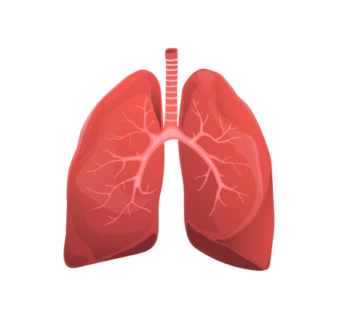
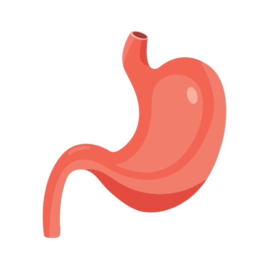
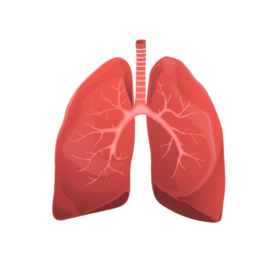
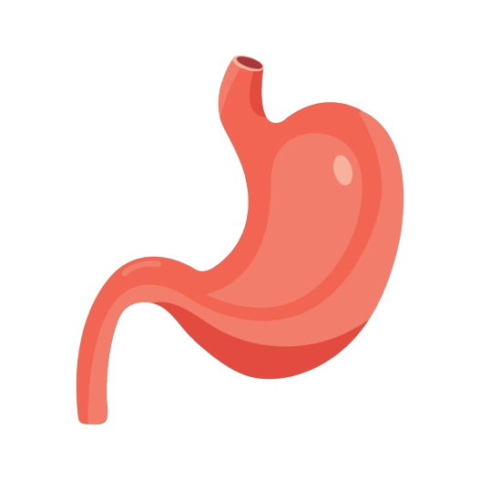

Le Coeur et la Circulation thermohaline
Le cœur pompe le sang, distribuant les nutriments et l’oxygène dans tout le corps, maintenant la vie tout comme les océans qui jouent un rôle similaire en étant au centre de la circulation thermohaline, souvent appelée le "cœur des océans". Ce processus transporte la chaleur, les nutriments et l’énergie à travers la planète, influençant le climat et soutenant les écosystèmes marins.

Les poumons et la production d'oxygene des Oceans
Les poumons permettent les échanges gazeux en absorbant l’oxygène et en expulsant le dioxyde de carbone, essentiel pour la respiration. Les océans sont souvent appelés les "poumons de la planète" car ils produisent environ 50% de l’oxygène de la Terre, principalement grâce au phytoplancton, et absorbent une grande partie du dioxyde de carbone présent dans l’atmosphère.

L'estomac et la digestions de la matiere organique par les oceans
L’estomac décompose les aliments et extrait les nutriments nécessaires au fonctionnement du corps. Les océans jouent un rôle similaire en "digérant" et recyclant la matière organique. Les zones comme les fonds marins ou les récifs coralliens transforment les nutriments pour alimenter les écosystèmes, tout comme l’estomac soutient le corps.

La sueur et la regulation de la temperateur terreste
La sueur régule la température corporelle en libérant de la chaleur par évaporation. D'une maniere similaire es océans régulent la température globale en absorbant la chaleur du soleil et en redistribuant cette énergie via les courants marins. Ce processus influence les climats régionaux et globaux, tout comme la sueur maintient l’équilibre thermique dans le corps.

Les benefices d'un coeur fonctionel
Une circulation océanique saine régule les températures mondiales et soutient la biodiversité marine, contribuant à un climat stable et à des écosystèmes marins florissants.

Les danger d'un Dysfonctionnement du coeur
Si cette circulation est perturbée (par exemple par le réchauffement climatique), cela peut entraîner des événements climatiques extrêmes, comme des vagues de chaleur océaniques, des inondations côtières et des pertes massives d’espèces marines.

Les benefices des poumons en bonne santé
Si les océans fonctionnent correctement, ils absorbent efficacement le CO2 et génèrent de l’oxygène, maintenant un climat équilibré et soutenant les chaînes alimentaires marines.
Les consequences d'un poumon malade
Lorsque les océans sont perturbés (par exemple en raison du réchauffement ou de l'acidification), leur capacité à absorber le CO2 et à produire de l'oxygène diminue, ce qui peut accélérer le réchauffement climatique et affecter les écosystèmes marins.

Les avantages du fonctionnement de l'estomac
Un océan sain recycle les nutriments, soutenant ainsi la biodiversité marine et garantissant un flux constant de ressources pour les chaînes alimentaires marines.
Les consequences du Dysfonctionnement de l'estomac
Si les océans sont pollués ou que les écosystèmes marins sont dégradés, la capacité de recyclage des nutriments est réduite, ce qui peut entraîner la mort d'espèces marines, la dégradation des habitats et un déséquilibre écologique.

Les bienfaits de la sueur
Les océans absorbent une grande quantité de chaleur du soleil et la redistribuent à travers les courants marins, régulant ainsi les températures mondiales et stabilisant les climats régionaux.

Les dangers qu'apporte le mauvais fonctionnement de la sueur
Si les océans sont incapables de réguler la chaleur efficacement, en raison du réchauffement climatique, cela peut entraîner des hausses de température extrêmes, des phénomènes météorologiques extrêmes et des perturbations climatiques globales.